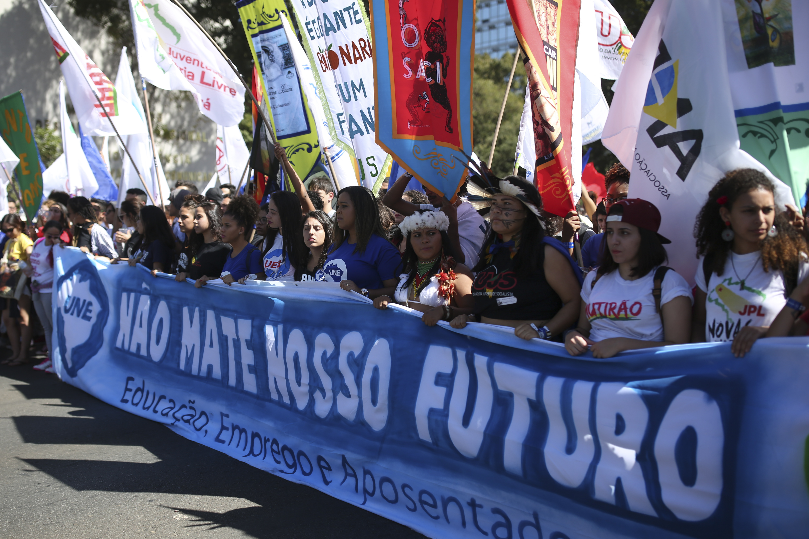

Consequências das desigualdades no aspecto social econômico
Veja como as desigualdades afetam nosso mundo
Imobilidade social
Imobilidade social é quando uma familía segue sua "hierarquia" na maioria das vezes, por exemplo, quando uma pessoa nasce em uma família pobre continuará pobre, como uma pessoa que nasce rica continua rica.
Conflitos
Esses conflitos são gerados pela desigualdades socias, quando o governo ou alguma instituição favorece mais uma parte de coiedade do que a outra.

Segregação e sentimento de injustiça
Isso ocorre pela desigualdade, principalmente na área econômica, pois enquanto uma família tem uma mesa farta outras sentem fome, enquanto um tem uma vida farturada de privilégios outros tem uma vida muito precária.
Desigualdade desgasta confiança no governo
O relatório mostra que desigualdades concentram influência política entre os que estão em melhor situação, o que tende a preservar ou mesmo aumentar as diferenças de oportunidade. “Crescente influência política entre os mais afortunados corrói a confiança na habilidade dos governos em atender às necessidades da maioria (da população)”. As crescentes desigualdades estão beneficiando os mais ricos. As alíquotas de imposto para as rendas mais altas têm diminuído em países desenvolvidos e em desenvolvimento, tornando os sistemas tributários menos progressivos. Em países desenvolvidos, as alíquotas para os mais ricos diminuíram de 66% em 1981 para 43% em 2018.
Mudanças climáticas acentuam desigualdades
De acordo com o relatório, as mudanças climáticas têm deixado os países mais pobres ainda mais pobres e, se não enfrentadas, podem levar milhões de pessoas para a pobreza nos próximos dez anos. As mudanças climáticas também estão deixando as coisas piores para a próxima geração, com impactos que devem reduzir oportunidades de trabalho, especialmente nos países mais afetados. O relatório alerta que as mudanças climáticas podem aumentar a desigualdade, afetando também as políticas desenvolvidas para combater seus efeitos. Na medida em que países adotam ações para o clima, será importante proteger as famílias de baixa renda.

Tecnologia criando vencedores e perdedores
Enquanto as novas tecnologias como inovação digital ou inteligência artificial abrem vastas e novas oportunidades de trabalho e engajamento, o relatório descobriu que o potencial para que elas promovam desenvolvimento sustentável só pode ser alcançado se todos tiverem acesso a elas, o que não está acontecendo, criando novas “divisões digitais”. Cerca de 87% das pessoas nos países desenvolvidos têm acesso a Internet, contra 19% nos países em desenvolvimento. Os avanços tecnológicos podem exacerbar as desigualdades, ao favorecer aqueles com acesso precoce a estas tecnologias, e aumentar as lacunas em educação se desproporcionalmente ajudarem os filhos dos mais ricos.